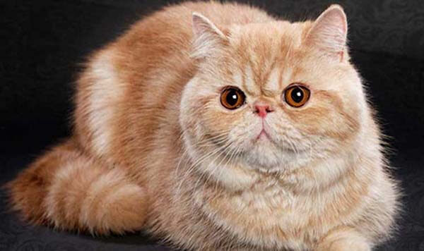
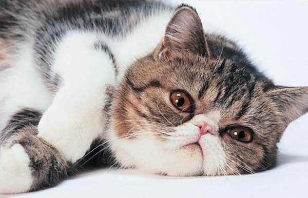

Mèo Exotic đặc biệt thích hợp với những bạn không có quá nhiều thời gian, quá bận rộn với công việc bởi giống mèo này rất ít quậy phá, có xu hướng tự chơi một mình mà không hề cảm thấy cô đơn.
Bộ lông ngắn của mèo Exotic sẽ cho bạn cảm giác vô cùng thích thú khi sờ vào. Mặc dù rất ít rụng, không nhiều như mèo Ba Tư thuần chủng nhưng bạn vẫn cần thường xuyên vuốt ve, trải chuốt và cắt tỉa định kỳ để bé mèo luôn đẹp nhé. Để bộ lông luôn sạch sẽ, bạn hãy tắm cho bé bằng sữa tắm chuyên dụng để bộ lông luôn mượt mà, đáng yêu hơn.
Mèo là loài vật thích được vuốt ve, cưng chiều và Exotic cũng không phải ngoại lệ. Mèo Exotic có bản tính hiền lành, quấn chủ và đặc biệt rất tình cảm với mọi người trong gia đình, chúng cũng rất thích chơi đùa với trẻ nhỏ.